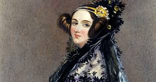

Ada Lovelace
Datos
Inicio
Biografía
Galería
Formulario
Datos curiosos:
Anticipó la música creada por computadoras Lovelace pensó que las notas y los sonidos podían ser traducidos al lenguaje de la máquina analítica para crear melodías complejas. Esta iniciativa era un primer paso en lo que eventualmente sería la música desarrollada por algoritmos.

Fue hija del poeta Lord Byron Lovelace era hija de Anne Isabella Noel y el reconocido poeta del romanticismo Lord Byron. Sus numerosos amoríos derivaron en el final prematuro de su matrimonio con Anne (tan solo duró un año). Byron dejó Inglaterra en 1816 y nunca más volvió. En Grecia combatió en contra del Imperio Otomano y murió allí a los 36 años fruto de un resfriado del que nunca se recuperó.
Desafió los mandatos de la era victoriana Lovelace no era una mujer habitual. Su mayor desafío era querer trascender las "limitaciones mentales" que la época imponía para el género. Durante un tiempo tomó clases con el matemático Augustus de Morgan. Lovelace progresó mucho en sus clase y comenzó hacer preguntas que iban más allá de lo que se trataban las lecciones. Morgan repudiaba esta actitud de la joven por considerar que no eran propias de una mujer. Le inquietaba que Lovelace pensara "como un hombre". Se quejó de esto ante su madre, Lady Byron, que, al igual que Ada, era dueña de un gran intelecto. Como era de esperar, no le prestó atención a la preocupación de Morgan y siguió alentando a su hija para que continuara sus estudios.
Murió a la misma edad que su padre Ada Lovelace falleció, en 1852, a los 36 años, la misma edad en que murió su padre. Tenía cáncer de útero, y sufrió una agonía de varios meses. Su última voluntad fue ser enterrada junto a su padre, Lord Byron, en la parroquia del pueblo de Hucknall Torkard, en Nottinghamshire Tenía cáncer de útero, y sufrió una agonía de varios meses. Su última voluntad fue ser enterrada junto a su padre, Lord Byron, en la parroquia del pueblo de Hucknall Torkard, en Nottinghamshire.
Tuvo tres hijos que también desafiaron los patrones de la época En 1835 se casó con William Lord King con quien tuvo tres hijos. El mayor de ellos, Byron, heredero del condado, abandonó el hogar y todas sus posesiones a los 16 años. Murió diez años después de tuberculosis. Su hija Anne Isabella Noel Blunt fue educada de manera estricta por su abuela Lady Byron y respetó los protocolos que dictaban la sociedad conservadora de la época. La rebelión llegó recién a los 30 años, cuando se casó con el poeta Wilfrid Scawen Blunt y se lanzó a una vida de aventura. Fue la primera mujer en cruzar el desierto de Arabia y se dedicó a criar caballos. Su hijo Ralph se dedicó a viajar por el mundo y, principalmente, a explorar Islandia. Era una amante del alpinismo.
Era fanática de las carreras de caballos Ada era fanática de las carreras de caballo y quiso aplicar sus conocimientos matemáticos para poder idear un modelo que le permitiera ganar las apuestas. Su idea no prosperó y se llenó de deudas en poco tiempo. De hecho atravesó grandes dificultades económicas, sobre todo los últimos años de vida.
Hay un lenguaje de programación que lleva su nombre. El lenguaje de programación Ada, fue desarrollado por el Departamento de Defensa de los Estados Unidos, en su honor. Se utiliza, en especial, en la aeronáutica, defensa y la gestión de tráfico aéreo. Todos sectores donde se requiere precisión y gran nivel de seguridad.